Dia Internacional De la Madre Tierra 22 de Abril
- 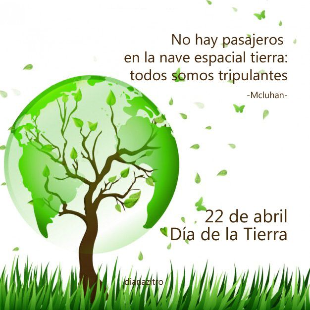

- 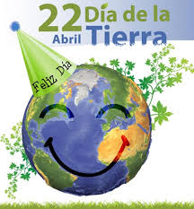
- 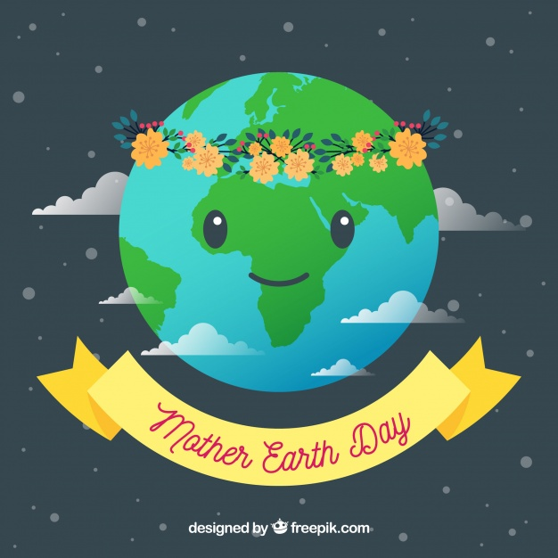
- 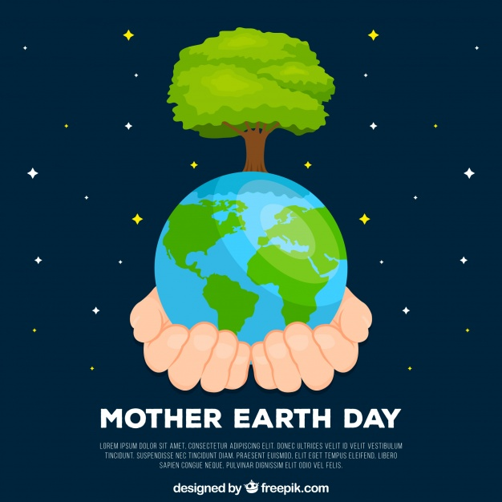
- 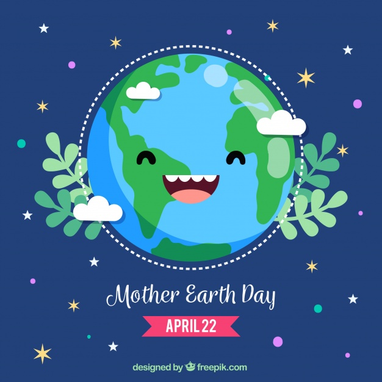
- 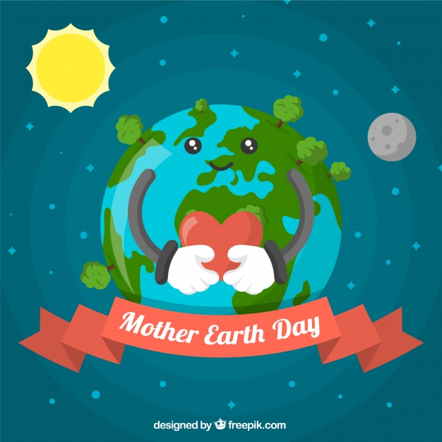
- 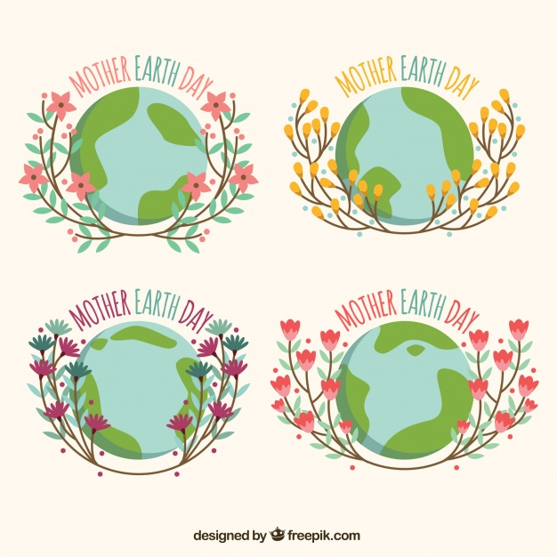
Realizado por:
Francisco Monte Flores
4 "F"
Especialidad:
Programacion
Submodulo
Desarolla Aplicaiones Moviles
Docente:
Lic. Jose Antonio Gomez Hernandez
4 "F"
Programacion
Desarolla Aplicaiones Moviles
Lic. Jose Antonio Gomez Hernandez
Celebramos el Dia Internacional de la Madre Tierra para recordar que el planeta y sus ecosistemas nos dan vida y el sustento .Con este dia, asumimos, ademas, la responsabilidad colectiva, como nos recoradaba la declaracion de Rio 1992, de fomentar esta armonia con la naturaleza y la Madre Tierra. Este dia nos brinda la oportunidad de concienciar a todos los hbitantes del planeta acerca de los problemas que se afectan a la Tierra y las diferentes formas de vida que en el se desarrollan.
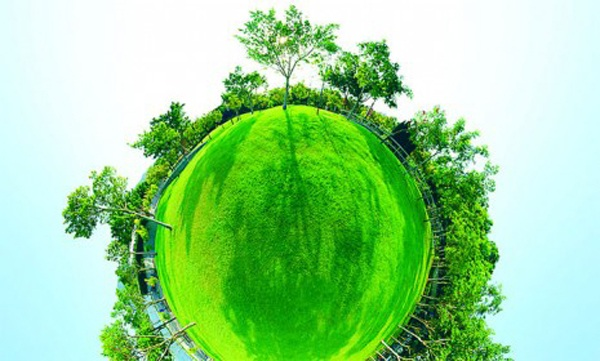En 1968, Morton Hilbert y el U.S. Public Health Service (Servicio de Salud Pública de E.E.U.U.), organizaron el Simposio de Ecología Humana, se realiza una conferencia por los nombrados anteriormente para una asamblea o conferencia medioambiental para que estudiantes escucharan a científicos hablar sobre los efectos del deterioro ambiental en la salud humana. Este fue el primer antecedente del Día de la Tierra. Durante los siguientes dos años, Hilbert y sus estudiantes trabajaron para planear el primer Día de la Tierra. Surgieron otros esfuerzos como Survival Project (Proyecto para la Supervivencia), uno de los primeros eventos educacionales de conciencia ambiental, que fue llevado a cabo en la Universidad Northwestern el 23 de enero de 1970. Este fue el primero de varios eventos realizados en campus universitarios por todo Estados Unidos. Así mismo, Ralph Nader empezó a hablar acerca de la importancia de la ecología en 1970.
La primera manifestación tuvo lugar el 22 de abril de 1970, promovida por el senador y activista ambiental Gaylord Nelson, para la creación de una agencia ambiental. En esta convocatoria participaron dos mil universidades, diez mil escuelas (primarias y secundarias) y centenares de comunidades. La presión social tuvo sus logros y el gobierno de los Estados Unidos creó la Environmental Protection Agency (Agencia de Protección Ambiental) y una serie de leyes destinadas a la protección del medio ambiente.
En 1972 se celebró la primera conferencia internacional sobre el medio ambiente. La Cumbre de la Tierra de Estocolmo cuyo objetivo fue sensibilizar a los líderes mundiales sobre la magnitud de los problemas ambientales.
Actualmente esta celebración, esta siendo opacada en Los Estados Unidos de América, por Donald John Trump; así como lo ha hecho con diversos programas relacionados, en el corto tiempo que lleva en la presidencia de dicho país.
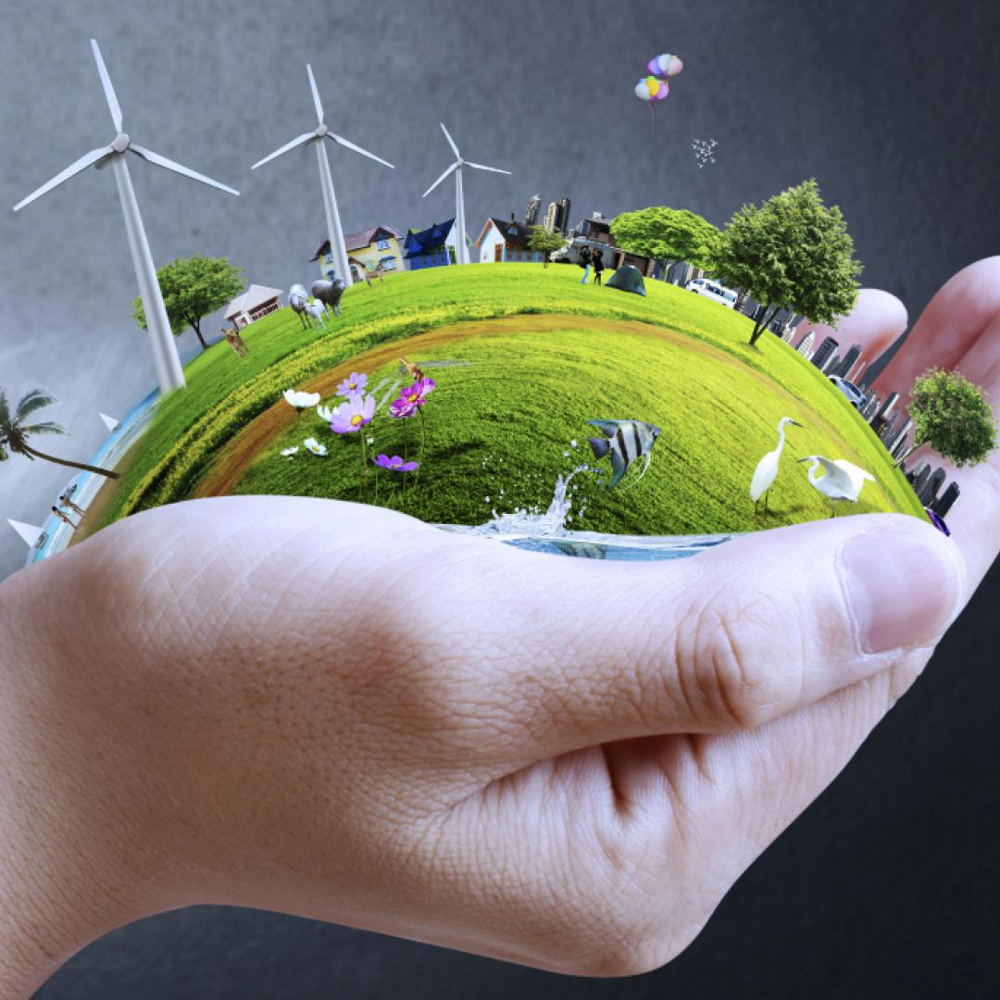"Madre Tierra" es una expresión común utilizada para referirse al planeta Tierra en diversos países y regiones, lo que demuestra la interdependencia existente entre los seres humanos, las demás especies vivas y el planeta que todos habitamos.
La Tierra y sus ecosistemas son nuestro hogar. Para alcanzar un justo equilibrio entre las necesidades económicas, sociales y ambientales de las generaciones presentes y futuras, es necesario promover la armonía con la naturaleza y el planeta.
Celebramos el Día Internacional de la Madre Tierra para recordar que el planeta y sus ecosistemas nos dan la vida y el sustento. Con este día, asumimos, además, la responsabilidad colectiva, como nos recordaba la Declaración de Río de 1992, de fomentar esta armonía con la naturaleza y la Madre Tierra.
Este día nos brinda también la oportunidad de concienciar a todos los habitantes del planeta acerca de los problemas que afectan a la Tierra y a las diferentes formas de vida que en él se desarrollan.
El cambio climático es una de las mayores amenazas para el desarrollo sostenible en todo el mundo y es consecuencia de las acciones insostenibles de la humanidad, que tienen implicaciones directas en la vida de las generaciones futuras.
La Convención Marco de las Naciones Unidas sobre el Cambio Climático (CMNUCC pdf document) y el Acuerdo de París pdf document fomentan la cooperación internacional entre las partes sobre educación, formación, conciencianción pública, participación pública y acceso público a la información sobre el cambio climático.
Con motivo del décimo aniversario del Día de la Madre Tierra, este año se celebra el noveno Diálogo sobre armonía con la naturaleza de la Asamblea General, el día 22 de abril en la Sede de la ONU de Nueva York, en el Salón del Consejo de Administración Fiduciaria.
El Diálogo Interactivo gira en torno al tema "La Madre tierra en la aplicación de la educación sobre el cambio climático". Va a servir para discutir las contribuciones de Armonía con la Naturaleza en garantizar una educación inclusiva, equitativa y de calidad para tomar medidas urgentes para combatir el cambio climático y sus impactos, e inspirar a los ciudadanos y las sociedades a reconsiderar cómo interactúan con el mundo natural en el contexto del desarrollo sostenible, la erradicación de la pobreza y la justicia climática, para garantizar que las personas en todo el mundo tengan la información y el conocimiento necesarios para alcanzar el desarrollo sostenible y los estilos de vida en armonía con la naturaleza.
Víctor Hugo, el autor de Los Miserables escribió: “Produce una inmensa tristeza pensar que la naturaleza habla mientras el genero humano no escucha.”
Hoy estamos reunidos para intentar dialogar no sólo entre Estados sino con la naturaleza. Aunque muchas veces lo olvidamos, los seres humanos somos una de las fuerzas de la naturaleza. En verdad, todos venimos del mismo Big Bang que dio origen al universo. Aunque algunos solo ven la leña para el fuego, cuando cruzan el bosque.
Tres preguntas son el punto de partida del debate de hoy:
Primero: ¿Qué es la naturaleza? Una cosa, una fuente de recursos, un sistema, un hogar, una comunidad de seres y entes interdependientes. Segundo: ¿Existen reglas en la naturaleza? ¿Leyes naturales que gobiernan su integridad, interrelación, reproducción y transformación? Y tercero: ¿Nosotros como Estados y como sociedad estamos reconociendo, respetando y haciendo prevalecer esas reglas de la naturaleza?
Francis Bacon decía que no se manda a la naturaleza sino obedeciéndola. El tiempo de los superhéroes y los superpoderes está llegando a su fin. La naturaleza no puede ser sometida a los caprichos de laboratorio. La ciencia y la tecnología lo pueden todo incluyendo la destrucción del propio mundo.
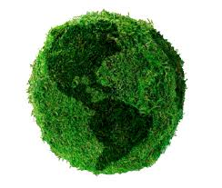La Asamblea General designa en su resolución A/RES/63/278 el 22 de abril como el Día Internacional de la Madre Tierra, teniendo en cuenta que en muchos países se celebra el día de la Tierra, y con el objetivo de alcanzar un justo equilibrio entre las necesidades económicas, las sociales y las ambientales de las generaciones presentes y futuras, y para promover la armonía con la naturaleza y la Tierra.
Invita a todos los Estados Miembros, las organizaciones del sistema de las Naciones Unidas, las organizaciones internacionales, regionales y subregionales, la sociedad civil, las organizaciones no gubernamentales y las partes interesadas a observar el Día Internacional de la Madre Tierra y crear conciencia al respecto, según proceda.
La Conferencia de las Naciones Unidas sobre el Medio Humano de 1972 celebrada en Estocolmo sentó las bases de la toma de conciencia mundial sobre la relación de interdependencia entre los seres humanos, otros seres vivos y nuestro planeta. Asimismo, se estableció el 5 de junio como el Día Mundial del Medio Ambiente y se creó el Programa de las Naciones Unidas para el Medio Ambiente (PNUMA), la agencia de la ONU encargada de establecer la agenda ambiental a nivel global, promover la implementación coherente de la dimensión ambiental del desarrollo sostenible en el sistema de las Naciones Unidas y actuar como un defensor autorizado del medio ambiente.
En 1992, más de 178 países firmaron la Agenda 21, la Declaración de Río sobre el Medio Ambiente y el Desarrollo, y la Declaración de Principios para la Gestión Sostenible de los Bosques en la Conferencia de Naciones Unidas sobre el Medio Ambiente y el Desarrollo (UNCED), que tuvo lugar en Río de Janeiro (Brasil) del 3 y el 14 de junio de 1992
En el año 2005, la Asamblea General declaró 2008 como el Año Internacional del Planeta Tierra para promover la enseñanza de las ciencias de la Tierra para facilitar a la humanidad los instrumentos necesarios para el uso sostenible de los recursos naturales y para construir la infraestructura científica esencial para el desarrollo sostenible.
En 2012 se celebró la Conferencia de las Naciones Unidas sobre el Desarrollo Sostenible, también conocida como Rio+20. Como resultado, se elaboró un documento que contenía medidas y prácticas para implementar un desarrollo sostenible. Además, en Río, los Estados Miembros decidieron emprender un proceso para establecer los Objetivos de Desarrollo Sostenible (ODS), que se basarían en los Objetivos de Desarrollo del Milenio y coincidirían con la Agenda para el desarrollo después de 2015.
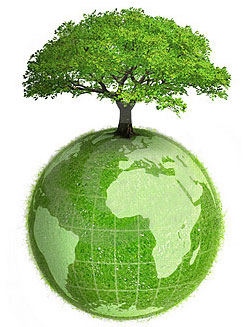